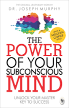
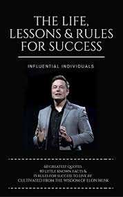
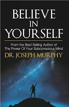

Here are some top books all time to read atleast once.
This high-fantasy novel is a famous three volume epic. It centers around an all powerful ring forged by the Dark Lord Sauron. For many years the ring is sought after by all likes, but at the start of the novel, it resides in the simple home of the hobbit Bilbo Baggins. Bilbo sets a momentous quest upon his cousin Frodo’s shoulders, tasking him with the journey to Mount Doom to destroy the ring.
Tolkein’s world-building is deep and rich. He creates languages in his stories that can even be learned by some of the more devoted readers. It’s not just a story that he’s crafting, but a home.
To Kill a Mockingbird, by Harper Lee Harper Lee’s classic is one those rare perfect novels, which by itself makes it a should read. It’s further elevated by the evergreen nature of its central conflicts and plot; nearly six decades after publication, the story of a small southern town’s struggle with racism and injustice remains disturbingly current. It’s also become a must read because it’s widely the quintessential 20th-century American novel.
This is a short and simple book. I didn't have much expectation going into it, but I was pleasantly surprised. First, the writer explains the difference between the conscious and subconscious mind and what role is played by both of them. Then, he makes a very good case by giving us examples by stating the reason our subconscious mind plays a vital role in shaping our life. It got me hooked. It's been said and done and it's nothing I haven't heard before but I was compelled to try out some of the the exercises myself like writing positive affirmations and memorizing them everyday. It's a fun activity and by no means, it'll lead to anything unless you take conscious steps towards your goal which is very important. The approach is positive, effective and motivating.
A very inspiring book on the achievements of Elon Musk and his legacy. There are numerous books out there but these series are the best. You get the entire history of an influential individual which is well researched, thoroughly written and beautifully expressed. A great source of motivation and increasing your awareness.
Dr Joseph Murphy was the author of The Power of your Subconscious Mind. In Believe in Yourself Dr. Murphy shows you how the power of believing in yourself will help you achieve your dreams. He illustrates his points with wonderful stories about how inventors, writers, artists, and entrepreneurs have used this power to reach the highest of heights. By the end of the book you will have the tools for success. There are many men who quietly use the abstract term success, over and over many times a day until they reach a conviction that success is theirs. As a man repeats the word success to himself with faith and conviction, his subconscious mind will accept it as true of himself, and he will be under subjective compulsion to succeed. - Joseph Murphy